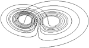
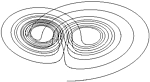

![[3D graph]](images/sombrero.jpg) 
GNU Octave is a high-level language, primarily intended for numerical
computations. It provides a convenient command line interface for
solving linear and nonlinear problems numerically, and for performing
other numerical experiments using a language that is mostly compatible
with Matlab. It may also be used as a batch-oriented language.

GNU Octave is a high-level language, primarily intended for numerical
computations. It provides a convenient command line interface for
solving linear and nonlinear problems numerically, and for performing
other numerical experiments using a language that is mostly compatible
with Matlab. It may also be used as a batch-oriented language.
For more information, see the page about Octave.
Current News
- May 22, 2007
- Version 2.9.11 is now available for ftp and is the new "testing" (also "recommended") version. As noted on the download page, 2.9.11 is a pre-release version of Octave 3.0. It is significantly different from Octave 2.1.x, particularly with regard to graphics, path handling, and built-in variables. Please read the NEWS file. [Mailing List Thread]
- March 27, 2007
- Version 2.9.10 is now available for ftp. [Mailing List Thread]
- March 1, 2007
- Thanks to Bob Weigel and Nabble, it is now possible to search the contents of the Octave mailing lists all the way back to the beginning of time (around 1992).
- December 7, 2006
- A new graphics branch of the code is now in the works to keep all graphics data in Octave to improve compatibility with Matlab and facilitate newer graphics back-ends. [Mailing List Thread]
- October 2, 2006
- Version 2.9.9 is now available for ftp. [Mailing List Thread]
- August 24, 2006
- Version 2.9.8 is now available for ftp. [Mailing List Thread]
- July 28, 2006
- Version 2.9.7 is now available for ftp. [Mailing List Thread]
- July 27, 2006
- Fairly complete support for Matlab's MEX interface has been added to the Octave CVS archive and will be part of the 2.9.7 shapshot. Please see [Mailing List Thread] for more details.
- June 29, 2006
- Please see this [Mailing List Thread] if you are having trouble compiling Octave 2.9.6 with GCC 3.x. After applying the patch, you'll need to run autogen.sh and configure again. This means you'll need to have a recent version of autoconf installed. Or, you can upgrade to GCC 4.x or you can wait for 2.9.7. So many options!
- June 9, 2006
- Version 2.9.6 is now available for ftp. [Mailing List Thread]
- May 26, 2006
- Function file cacheing has been improved with hopefully major speedups when calling m-file functions. [Mailing List Thread]
- May 21, 2006
- Octave-forge is being cleaned up by moving core functions into the main Octave distribution. [Mailing List Thread]
- May 11, 2006
- Path manipulation was significantly cleaned up. Now instead of
manipulating the
LOADPATHvariable, you can use theaddpath,rmpath, andpathfunctions. [Mailing List Thread]
For older news, see the news archive.